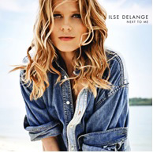
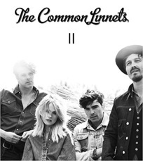
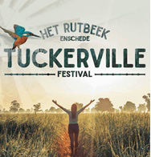

Carrière
Ilse de Lange is geboren op 13 mei 1977 in Almelo. Ze begon al op jonge leeftijd met playbacken en deed ook mee met wedstrijden, die ze ook vaak won. Na een tijdje begon Ilse met zingen. Ze trad in 1994 op voor de Nederlandse Country Music Awards, maar dit was niet genoeg voor een platencontract. Ilse haar doorbraak kwam in 1996. Ze was naar Nashville (VS) gegaan met de groep Cash on Delivery waar Ilse toen een deel van uit maakte. Ze heeft samen met Barry Beckett het album Word of Hurt opgenomen. Doordat Ilse haar album in de country-hoofdstad van de wereld had opgenomen, raakte Ilse bekend in Nederland. Ilse vloog weer opnieuw naar Amerika om een tweede album op te nemen. Ze bleef een jaar stil. Er gingen geruchten over het nieuwe album en uiteindelijk kwam het album Livin' On Love. Dit album ging al wat meer de pop/rock kant op. Ilse won in 2001 een Edison voor de Beste Nederlandse artiest van 2001. In 2002 vertrok Ilse de Lange met haar partner Bart Vergoossen voor negen maanden naar Amerika om aan een nieuw album te werken. Dit album genaamd Clean Up verscheen in 2003. In 2004 werd de platenmaatschappij Warner Music opgeheven. Hierdoor kwam Ilse op straat te staan zonder platencontract, maar tegenwoordig zit Ilse bij Firefly/Universal Music. Ilse bleef liedjes schrijven en ging vaak op tour. Daarnaast is Ilse ambassadeur van de BankGiro Loterij. Elk jaar in januari doet ze mee aan de BankGiro Loterij concerten met andere artiesten.
Hits
Ilse de Lange heeft veel hits op haar naam staan. Haar eerste top 40 hit was I'm Not So Tough die op het album World of Hurt staat. Ilse werkt in 2003 samen met Kane en samen maakten ze de single Before You Let Me Go. Dit was Ilse haar eerste single die de top 4 bereikt. In 2006 bracht Ilse het album The Great Escape uit. Dit album bereikte een platina status en kreeg voor dit album ook een TMF award. Na The Great Escape kwam in 2008 Ilse haar zevende album uit, Incredible. Dit album had een heleboel hits, zoals So Incredible, Miracle en Puzzle Me. Alle drie deze nummers kwamen in de top 10 terecht. Miracle was oorspronkelijk geschreven als titelsong voor de film Bride Flight. In 2010 kwam Ilse weer met een nieuw album Next To Me. Dit album kwam al snel in de hitlijsten en kreeg ook snel de status van Goud. Ilse werd in 2013 gevraagd of ze weer een nummer wilde schrijven voor een film. Deze keer voor de film Het Diner van Herman Koch. Ilse had al wat nummers liggen en koos uiteindelijk voor het nummer Blue Bittersweet. Ook dit nummer kwam in de top 40 terecht.
The Common Linnets
Ilse was al vaak gevraagd om mee te doen aan het Eurovisie Songfestival. Elke keer zei Ilse dat ze dat niet wilde. Totdat Anouk in 2013 meedeed. Ilse veranderde hierdoor van mening over het Eurovisie Songfestival en wilde een band starten samen met Waylon. De band zou The Common Linnets heten en met die band wilden ze naar het Eurovisie Songfestival gaan. Dit gebeurde ook. Ze schreven samen het nummer Calm After the Storm. Toen het nummer voor het eerst te horen was, was er veel kritiek op. Het zou niet speciaal genoeg zijn voor een Songfestival. Ilse en Waylon zaten hier niet mee en met die instelling zijn ze naar het Songfestival gegaan. Daar hebben ze uiteindelijk de tweede plek bemachtigd en hebben ze Nederland laten zien dat ze met dit lied makkelijk een goede score konden halen. Calm After the Storm werd een hit door heel Europa. Het nummer kwam in de Europese top 10 terecht. Er kwam ook een album van The Common Linnets en deze verkocht zo goed dat ze er driedubbel platina voor kregen. Na een tijdje is Waylon de band uitgestapt vanwege omstandigheden en is Ilse verder gegaan met de band maar dan met nieuwe zangers, Matthew Crosby, JB Meijers en Jake Etheridge. Met deze nieuwe bandleden heeft Ilse een tweede album gemaakt en ook dit album scoorde weer goed. Tot op heden bestaat de band The Common Linnets nog.
Programma's
Ilse de Lange was vanaf seizoen vier van The Voice of Holland te zien als coach. In dit seizoen kwam ze met haar kandidaat tot de finale en haalden ze de tweede plek. Ilse was ook coach in seizoen vijf. Na dit seizoen stopte Ilse bij de volwassen Voice omdat ze meer tijd wilde steken in The Common Linnets. Wel werd Ilse coach bij The Voice Kids in 2016. Ze heeft dit seizoen ook gewonnen met haar kandidaat Esmée Schreurs. Ilse is nog tot heden coach bij The Voice Kids. In 2017 werd bekendgemaakt dat er The Voice Senioren komt. Ook in deze versie van The Voice zal Ilse coach zijn. Ook in 2017 werd bekendgemaakt dat Ilse haar eigen programma kreeg genaamd Ilse's Veranda. Dit programma speelt af in de Amerikaanse stad Nashville. Elke week ontvangt Ilse een nieuwe gast. Ze probeert deze gast te leren kennen door samen Nashville te verkennen en een liedje te schrijven en te zingen op Ilse's veranda. De gasten van dit seizoen waren Guus Meeuwis, Kenny B, Ellen ten Damme, Barry Hay, Marc-Marie Huibrechts en Douwe Bob. Naast Ilse haar nieuwe programma maakte Ilse in december 2017 bekend dat ze in de Amerikaanse serie Nashville een bijrol heeft gekregen. Ze zal te zien zijn in zes afleveringen als Ilse de Witt. Net als in Ilse haar echte leven, gaat Ilse een coach spelen.
Tuckerville
Tuckerville werd in 2014 voor het eerst georganiseerd door Ilse de Lange. Deze editie vond plaats op zaterdag 21 juni in Grolsch Veste in Enschede. Er waren optredens van The Common Linnets (toen nog met Ilse en Waylon), De Dijk, Daniël Lohues en Tim Knol. Ilse wilde graag nog een editie van Tuckerville organiseren en dit gebeurde ook. Op 2 september 2017 zou Tuckerville editie 2 er zijn, maar nu op een andere locatie. Het was nu op Het Rutbeek, te Enschede. Deze keer kwamen er andere artiesten als Racoon, Douwe Bob, Triggerfinger, Amy Macdonald, The Common Linnets en meer. Deze tweede editie werd een groot succes met ongeveer 12.500 bezoekers. Door het grote succes kondigde Ilse op 7 februari 2018 aan dat er een editie 3 zou komen op 1 september 2018 met optredens van Jacqueline Govaert, George Ezra, Isaac Gracie, Dotan, Matthew Crosby en Ilse gaat het festival afsluiten met een solo optreden. Dit heeft Ilse sinds 2014 niet meer gedaan. Tuckerville is vooral een gezinsfestival. Er staan foodtrucks over het hele terrein, er is een schommelbos en er is Kidsville voor de kinderen. Daarnaast ligt het aan een meer met een klein strand waar je kampvuurplekken hebt en je 's avonds gezellig bij een kampvuur kan kletsen en eten.